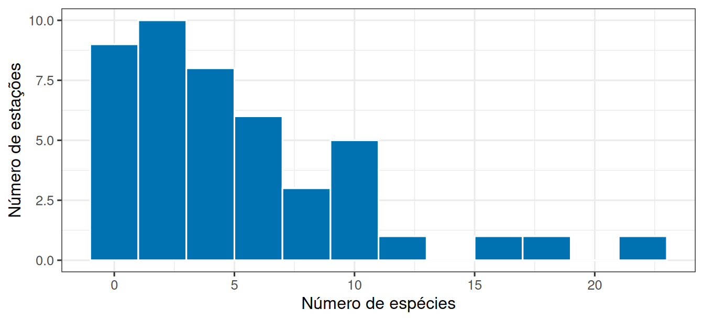
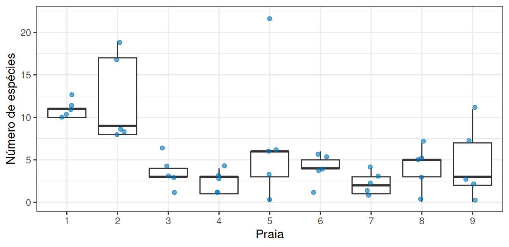
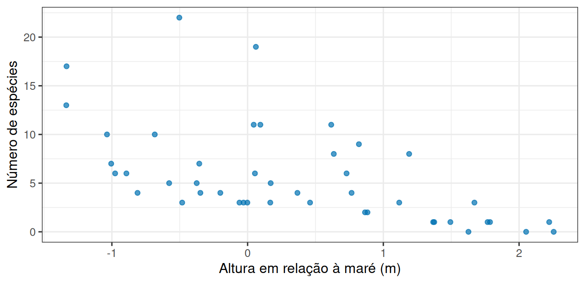
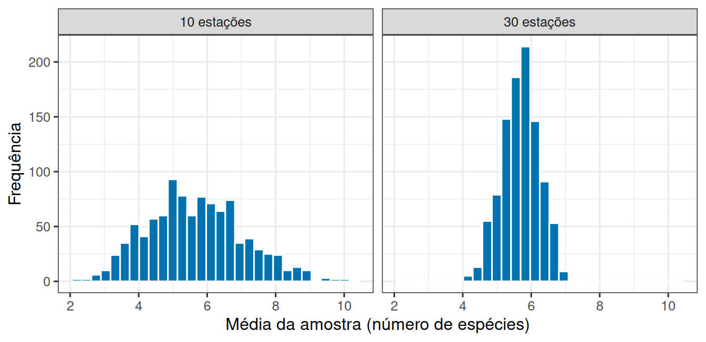

library(tidyverse)
theme_set(theme_bw(base_size = 12))Prática em R 02
A amostra representa a praia?
1 Nove praias, 45 estações
Um levantamento no litoral holandês registrou, em cada estação de amostragem, quantas espécies de invertebrados foram encontradas e a altura da estação em relação ao nível médio da maré. As estações se distribuem por nove praias.
A pergunta desta prática é a mais básica de qualquer levantamento: o que essas 45 estações permitem dizer sobre a região, e o que não permitem?
2 Vamos abrir os dados
Os dados estão em um arquivo de texto separado por tabulações, disponível na internet. Guardamos o endereço em um objeto e passamos para read_tsv():
url <- "https://raw.githubusercontent.com/FCopf/datasets/refs/heads/main/zuur-2009-data-sets/RIKZ.txt"
rikz <- read_tsv(url, show_col_types = FALSE)
glimpse(rikz)Rows: 45
Columns: 5
$ Sample <dbl> 1, 2, 3, 4, 5, 6, 7, 8, 9, 10, 11, 12, 13, 14, 15, 16, 17, 18…
$ Richness <dbl> 11, 10, 13, 11, 10, 8, 9, 8, 19, 17, 6, 1, 4, 3, 3, 1, 3, 3, …
$ Exposure <dbl> 10, 10, 10, 10, 10, 8, 8, 8, 8, 8, 11, 11, 11, 11, 11, 11, 11…
$ NAP <dbl> 0.045, -1.036, -1.336, 0.616, -0.684, 1.190, 0.820, 0.635, 0.…
$ Beach <dbl> 1, 1, 1, 1, 1, 2, 2, 2, 2, 2, 3, 3, 3, 3, 3, 4, 4, 4, 4, 4, 5…São 45 linhas e 5 colunas:
Sample: identificador da estação;Richness: número de espécies encontradas;Exposure: índice de exposição da praia às ondas;NAP: altura da estação em relação à maré, em metros (valores negativos ficam abaixo do nível médio);Beach: identificador da praia.
3 Como os dados estão distribuídos entre as praias?
Antes de calcular qualquer média, vale conferir se o esforço de coleta foi o mesmo em toda parte.
rikz |> count(Beach)# A tibble: 9 × 2
Beach n
<dbl> <int>
1 1 5
2 2 5
3 3 5
4 4 5
5 5 5
6 6 5
7 7 5
8 8 5
9 9 5Cinco estações por praia, nas nove praias. Um levantamento equilibrado, o que nem sempre acontece.
4 Qual é a riqueza típica da região?
rikz |>
summarise(
n = n(),
media = mean(Richness),
desvio = sd(Richness),
minimo = min(Richness),
maximo = max(Richness)
)# A tibble: 1 × 5
n media desvio minimo maximo
<int> <dbl> <dbl> <dbl> <dbl>
1 45 5.69 5.00 0 22A média fica em torno de 5 espécies, mas o intervalo entre mínimo e máximo é enorme. Um único número esconde isso.
ggplot(rikz, aes(x = Richness)) +
geom_histogram(binwidth = 2, fill = "#0072B2", colour = "white") +
labs(x = "Número de espécies", y = "Número de estações")
5 As praias são todas parecidas?
resumo_praias <- rikz |>
group_by(Beach) |>
summarise(
media = mean(Richness),
desvio = sd(Richness)
)
resumo_praias# A tibble: 9 × 3
Beach media desvio
<dbl> <dbl> <dbl>
1 1 11 1.22
2 2 12.2 5.36
3 3 3.4 1.82
4 4 2.4 1.34
5 5 7.4 8.53
6 6 4 1.87
7 7 2.2 1.30
8 8 4 2.65
9 9 4.6 4.39ggplot(rikz, aes(x = factor(Beach), y = Richness)) +
geom_boxplot(outlier.shape = NA) +
geom_jitter(width = 0.15, alpha = 0.6, colour = "#0072B2") +
labs(x = "Praia", y = "Número de espécies")
6 E se tivéssemos medido só uma parte?
Vamos testar essa ideia. A função slice_sample() sorteia linhas de uma tabela. Aqui pegamos 10 das 45 estações, como se o orçamento só permitisse isso:
primeira_amostra <- rikz |> slice_sample(n = 10)
media_primeira <- mean(primeira_amostra$Richness)
media_primeira[1] 5.9Compare com a média das 45 estações calculada acima. Agora sorteie outra amostra de 10:
segunda_amostra <- rikz |> slice_sample(n = 10)
media_segunda <- mean(segunda_amostra$Richness)
media_segunda[1] 4.5Duas amostras do mesmo levantamento, duas estimativas diferentes: nesta execução, a diferença entre elas foi de 1,40.
7 Sortear estações ou sortear praias?
Existe outra maneira de amostrar, e ela muda o resultado. Em vez de sortear estações soltas, podemos sortear praias inteiras e usar todas as suas estações.
praias_sorteadas <- sample(1:9, size = 3)
praias_sorteadas[1] 1 2 3rikz |>
filter(Beach %in% praias_sorteadas) |>
summarise(n = n(), media = mean(Richness))# A tibble: 1 × 2
n media
<int> <dbl>
1 15 8.87São 15 estações, mais do que as 10 do sorteio anterior, mas vindas de apenas três praias.
8 A altura da estação explica alguma coisa?
Uma última olhada, que prepara boa parte do semestre:
ggplot(rikz, aes(x = NAP, y = Richness)) +
geom_point(alpha = 0.7, colour = "#0072B2") +
labs(x = "Altura em relação à maré (m)", y = "Número de espécies")
9 Entrega
10 Atividade extraclasse 01: Um processo, muitas amostras
Esta seção é feita em casa, na semana indicada no cronograma, e produz uma entrega própria.
Até aqui você sorteou amostras uma a uma e comparou as médias na mão. Agora vamos automatizar a repetição para enxergar o padrão.
A função replicate() repete uma expressão quantas vezes você pedir e guarda os resultados:
medias_10 <- replicate(1000, mean(sample(rikz$Richness, size = 10)))
medias_30 <- replicate(1000, mean(sample(rikz$Richness, size = 30)))
sd(medias_10)[1] 1.400432sd(medias_30)[1] 0.5379503sample(rikz$Richness, size = 10) sorteia 10 valores da coluna de riqueza; mean() calcula a média deles; replicate(1000, ...) faz isso mil vezes.
simulacoes <- bind_rows(
tibble(tamanho = "10 estações", media = medias_10),
tibble(tamanho = "30 estações", media = medias_30)
)
ggplot(simulacoes, aes(x = media)) +
geom_histogram(bins = 30, fill = "#0072B2", colour = "white") +
facet_wrap(~ tamanho) +
labs(x = "Média da amostra (número de espécies)", y = "Frequência")